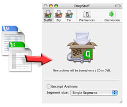
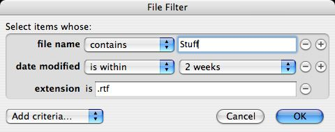
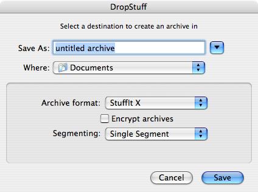

Using DropStuff®
DropStuff is easy to use! To compress your files into an archive, drag and drop files and/or folders into the DropStuff window, as shown in the figure below. To change formats, select a format icon from the toolbar.
For quick and easy access, you can drag and drop the DropStuff application icon onto the Dock so that it's handy whenever you need to use it. Then you can drag and drop files and folders onto the DropStuff Dock icon. If DropStuff is closed, the program will launch, compress your files and quit.
Note: If you drag files to DropStuff when the application is not running, it will create archives in which ever format and whichever settings were last selected.

When you drag and drop multiple items onto DropStuff, those items are combined into a single archive file. By default, that archive is created in the same folder as the files and folders you dragged to DropStuff (this setting can be changed in the preferences).
Supported Archive Formats
By default DropStuff creates archives in StuffIt X format. The StuffIt X archive format offers the best available compression, and also provides access to unique features such as strong 512-bit encryption, error correction, and the ability to compress JPEG images. DropStuff also allows you to create Zip and UNIX Tape Archives (TAR). Zip archives are most common on Windows® based computers. StuffIt X archives provide better compression than Zip, and you may also find that certain Macintosh-specific file attributes are not correctly preserved when Zip compression is used. The TAR format is most commonly used on Linux or UNIX based computers. The TAR format has no inherent compression, it only groups files together into an archive format. Gzip is a common post-compression format for TAR files.
Encryption
When you use DropStuff to combine files into an archive, you can choose to protect the resulting archive with encryption. When encryption is turned on, the software will prompt you to supply a passphrase during the compression process. This passphrase is used as a "key" to scramble the contents of the archive, only people with the correct passphrase, or key, will then be able to extract the files you add to an encrypted archive.
While both StuffIt X and Zip provide encryption, the encryption provided by the StuffIt X format is the better choice. StuffIt X uses strong encryption (512bit RC4 encryption, by default) and, unlike Zip, the encryption used by StuffIt X requires the user to enter a password to browse the contents of an archive.
Any encryption method you use to protect your files is only as strong as your passphrase. When you see encryption methods rated by strength (40bit, 128bit, 512bit, etc) the number used indicates how many "bits" your passphrase can contain. Stronger encryption methods simply allow you to use longer passphrases. For the most secure passphrases, avoid using common names, or words that can be found in a standard dictionary. The most common way to defeat, or "hack", a secure archive is to use common dictionary words to guess the passphrase. When you enter your passphrase the "Password Quality" bar will indicate how secure your passphrase will be.
Segmentation
When you create archives in StuffIt X format, you have the ability to create those archives in pieces small enough to fit on removable media including CD-R(W) and DVD-R(W). You can tell StuffIt how big the segments should be either by choosing a pre-set disk type from the Segmenting pop-up menu, or by choosing "Other" and entering a specific size. Once the segments are created you can copy them to each removable disk. Be sure to keep track of all of the segments. If any segment is missing, the archive can not be rejoined or expanded.
Index Archives
Index archives are a type of StuffIt archive that was introduced in StuffIt Deluxe 11. A StuffIt Index Archive is a very small proxy archive, stored locally, that is created at the same time as a regular StuffIt X archive. The StuffIt Index Archive contains the index, or catalog including a full list of the attributes (such as their name and size), of all the items that are stored in its matching StuffIt X archive. An Index Archive is always paired with a matching StuffIt X archive. If you attempt to expand a file from an Index Archive, you will be prompted to locate the matching StuffIt X archive that contains the actual files.
For StuffIt Deluxe suite users, a StuffIt Index Archive can be browsed using StuffIt Archive Manager or have its contents accessed via Spotlight, even if the matching StuffIt X archive is stored offline (eg: on CD or network volume) and is not available.
You can choose to create an Index Archive when you are making StuffIt X archives by checking the "Create Index Archives" box in the main DropStuff dialog. StuffIt Standard users should consider upgrading to the StuffIt Deluxe suite to take full advantage of this feature.
The Stuff Menu Command
While DropStuff is designed to be used as a drag and drop application, you can compress files using the Stuff command in the DropStuff "File" menu. When you choose Stuff from the File menu, a file selection dialog will be used to allow you to select files to compress. If you select multiple files and/or folders in the selection dialog, they will be combined into a single archive file. If the selected archive format is Zip, then the menu command will be "Zip", if the selected archive format is TAR, the menu command will be "Archive".
DropStuff Filters
In addition to using the Stuff menu command to create a regular archive, you can also use the "Stuff with Filters" menu command to create an archive from a source folder that only contains those items that match the custom search criteria you specify.
When you choose "Stuff with Filters" from the file menu, you will first be asked to choose the source folder from which you wish to create an archive. After you have selected the folder, you will next be presented with a "Find..." dialog that allows you to specify which files in the folder you wish to add to the archive.
While the entire folder hierarchy will be recreated within the archive, only files that match the search criteria you specify in this dialog will be added to the archive. In the example pictured, DropStuff will create an archive from the selected folder using only files with the word "Stuff" in the title, that have an extension of ".rtf", and that were modified in the last 2 weeks.

Changing Archive Formats
The DropStuff application window now allows you to change commonly used compression settings without having to open the preferences window. Click the format you want to create in the DropStuff toolbar to change the setting. When you change format, additional options related to that format appear at the bottom off the DropStuff window.
- Encryption: When DropStuff is configured to create either StuffIt X or Zip archives you can check the "Encrypt Archives" box in the application window to protect the archive you create with a passphrase.
- Segment Size: When DropStuff is configured to create StuffIt X archives you can choose to create the archive in multiple parts. This option is useful when you need to split a large archive into smaller parts so it can be saved to a CD, DVD, or other removable media. You can also use segmentation to split a large file into smaller parts to work around the file size limits that are often encountered when you send files via email.
- Compression Method: When DropStuff is configured to create UNIX Tape Archives (TAR), you can choose to further compress those archives with either bzip2, gzip, or UNIX compression. This option is useful because the Tape Archive format does not include compression.
One Time Preferences
One of the most useful features of DropStuff is the ability to access a "One Time" preferences dialog. This dialog allows you to access the most common archive settings quickly and conveniently, and make changes that apply only to the current compression task. This can be particularly useful if you are using DropStuff by dragging and dropping items to the icon in the Dock and don't remember what the current preferences happen to be.

To use one time preferences, hold down the Option key as you drag and drop items on top of the DropStuff icon.
The Destination Tray
DropStuff allows you to change the destination to which a newly created archive will be saved from the destination tray. To open the destination tray, click the "Destination" button in the DropStuff toolbar. DropStuff allows you to save your archives to four main types of destination:
- Folder: The folder option allows you save your archive to any location in the Finder, including folders on your internal hard drives, external drives, and mounted network volumes.
- CD/DVD: The CD/DVD option allows you to burn archives to CD or DVD using the CD burning software built into Mac OS X.
- FTP: The FTP option allows you to upload the archive you create to an FTP server.
- .Mac: The .Mac option allows you to upload the archives you create to your .Mac iDisk.
Detailed information about how to configure each of these destination options is included in the preferences section of this chapter.
Back to Help Home Page
Copyright © 2007 Smith Micro Software, Inc. All rights reserved.